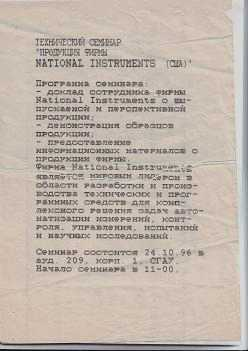

|

Несколько раз сильно пострадав от плагиаторов (от людей, живущих и действующих
по принципу
"если в Интернете, значит ничье, если ничье, значит мое"), я тем не менее в
очередной раз решился обнародовать дорогие мне материалы. Связано это с несколькими
обстоятельствами.
Во-первых, на нашей кафедре LabVIEW используется в учебном процессе практически
с 1996 года. Назрела необходимость каким-то образом "прорекламировать" именно
эту сторону ее деятельности. К тому же, иметь методические материалы
в Интернете по разным причинам просто удобно.
Во вторых, хотя в последние годы появилась некоторая литература по LabVIEW,
она лично меня не устраивает ни как преподавателя, ни как инженера. Например, книжка Ф.П. Жаркова, В.В. Каратаева,
В.С. Панова "Использование виртуальных приборов LabVIEW" написана откровенно
непрофесcионально. Перевод знаменитой "библии" Дж. Тревиса "LabVIEW для всех"
слишком дорог для студента и рядового специалиста, да и во многом тематически
уступает своему первому изданию (у меня есть американский оригинал от 1996 года).
Есть еще пара книжек, которые можно использовать либо как учебник для совсем
начинающих, либо как справочник по основным функциям. Вопросы же практического
применения LabVIEW при программировании задач автоматизации в этих работах
опущены. L
Наконец, просто обидно, что я вкалывал-вкалывал, а об этом мало кто узнает.
J
Итак, я выкладываю в Интернет не все, но лишь избранные фрагменты (несколько характерных
глав) из моего многострадального учебного пособия, общий объем которого составляет около 5 печ. л. Также
две первые главы оформлены в виде отдельных методических указаний в формате
PDF. Напишите мне, и я вышлю их Вам.
Кроме того, в настоящее время я работаю над второй частью пособия. Рабочее название:
"Решение практических задач в среде LabVIEW". В книжке предполагается кратко
осветить следующие вопросы:
- файловый ввод-вывод;
- создание на LabVIEW распределенных систем, программирование RS-232, UDP, TCP/IP;
- взаимодействие LabVIEW-приложений с оборудованием фирмы National Instruments;
- программирование "нестандартного" оборудования: доступ к портам ввода-вывода
(в том числе в Windows NT/2K/XP), обработка аппаратных прерываний и т.п.;
- цифровая обработка данных средствами LabVIEW + HiQ;
- моделирование сложных систем средствами LabVIEW.
По мере готовности я буду выкладывать отдельные фрагменты на эту страничку.
|